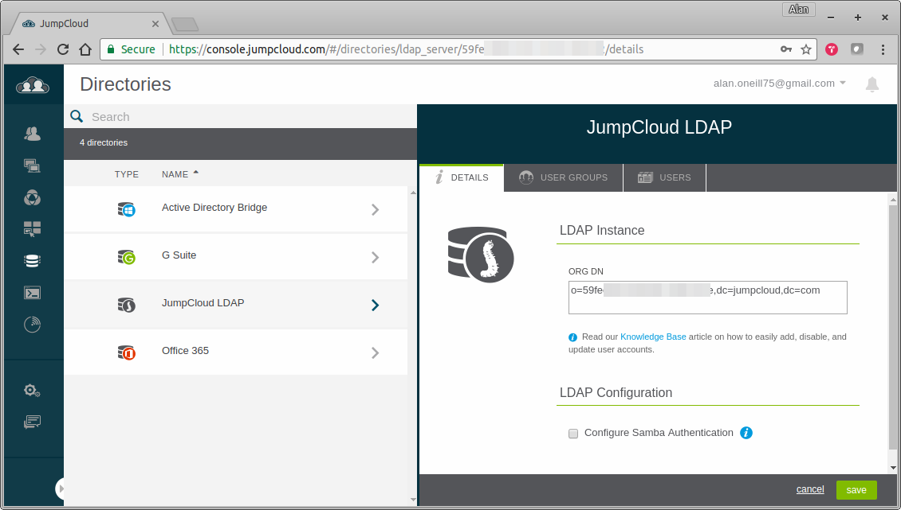

FIMpy - File Integrity Monitor
User Documentation
TODO
Project Report
TODO
Monthly Journal 1
The Idea
Real World Evidence
Design & Requirements
Monthly Journal 2
Python
HMAC
Authentication Using LDAP
Slack
Bluemix
Containers
Kubernetes
Early Testing
POST /api/fimpy - Write monitored file info to db
GET /api/fimpy - Read monitored file info from db
LDAP Authenication Failure
References
JumpCloud - LDAP-as-a-Service
Docker Reference
Kubernetes Reference
GitBook
Published with GitBook
JumpCloud - LDAP-as-a-Service
JumpCloud LDAP-as-a-Service

results matching "
"
No results matching "
"